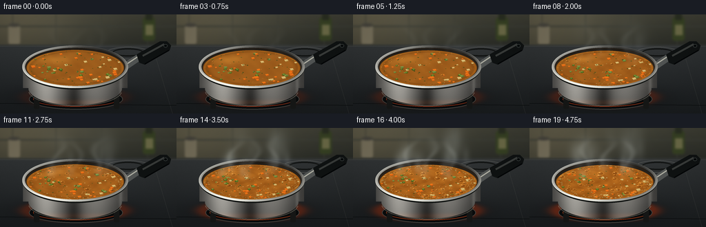
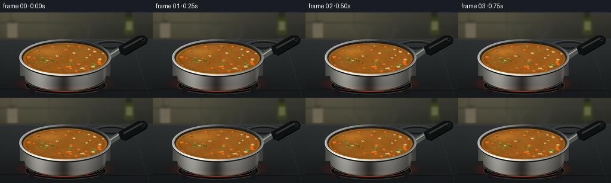
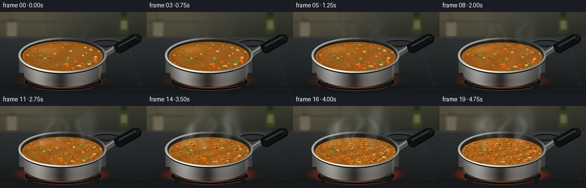
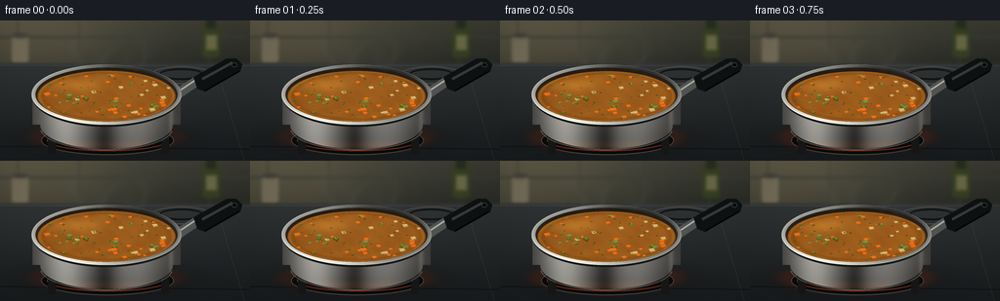
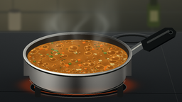

CODING AGENTS AS PIXEL WORLD MODELS
traex/GPT-6.1-Sol · phygen_108
点击播放 · 原生 RGB 像素
逐轮保存的候选
回放视频、检查图与代码变化。
每份候选均可单独播放。实际图片检查记录在下方工具轨迹中。
候选 01播放与检查图
点击播放 · 原生 RGB 像素


展开代码变化
--- 上一保存版本
+++ 本次保存版本
@@ -0,0 +1,258 @@
+from pathlib import Path
+import numpy as np
+from PIL import Image, ImageDraw, ImageFilter
+import artifact_io
+
+ROOT=Path(__file__).resolve().parent
+W,H,S=256,144,4
+w,h=W*S,H*S
+Y,X=np.mgrid[0:h,0:w].astype(float)/S
+rng=np.random.default_rng(164)
+
+def mix(a,b,t):
+ return np.asarray(a)*(1-np.asarray(t)[...,None])+np.asarray(b)*np.asarray(t)[...,None]
+def composite(a,b,alpha):
+ return a*(1-alpha[...,None])+b*alpha[...,None]
+def ellipse(cx,cy,rx,ry): return ((X-cx)/rx)**2+((Y-cy)/ry)**2
+
+def draw_layer():
+ im=Image.new('RGBA',(w,h)); return im,ImageDraw.Draw(im)
+def box(coords): return tuple(int(x*S) for x in coords)
+def line(d,pts,fill,width=1): d.line([(int(x*S),int(y*S)) for x,y in pts],fill=fill,width=max(1,int(width*S)))
+def paste(base,im):
+ arr=np.asarray(im).astype(float)
+ return composite(base,arr[:,:,:3],arr[:,:,3]/255)
+
+# Softly defocused kitchen and an enamel stovetop. All textures are procedural.
+noise=rng.normal(0,1,(h,w))
+base=np.zeros((h,w,3))
+base[:]=[58,56,48]
+v=np.clip(Y/48,0,1)
+base=mix([62,62,52],[40,42,37],v)
+# Light entering from upper left.
+light=np.exp(-((X-26)/102)**2-((Y-21)/80)**2)
+base+=light[...,None]*np.array([33,28,19])
+backsplash=Image.fromarray(np.uint8(np.clip(base,0,255)))
+d=ImageDraw.Draw(backsplash)
+for yy in [-12,17,46]:
+ d.line(box((0,yy,W,yy)),fill=(58,60,52),width=2*S)
+for xx in [18,81,147,214]:
+ d.line(box((xx,0,xx,46)),fill=(60,61,52),width=S)
+# Out of focus salt vessel and olive oil bottle at rear.
+d.rounded_rectangle(box((207,4,225,38)),radius=4*S,fill=(54,64,35))
+d.rectangle(box((211,0,221,8)),fill=(41,45,33))
+d.rectangle(box((211,15,222,30)),fill=(106,105,70))
+d.rounded_rectangle(box((12,16,29,43)),radius=3*S,fill=(115,108,88))
+d.ellipse(box((12,13,29,18)),fill=(66,64,57))
+backsplash=backsplash.filter(ImageFilter.GaussianBlur(1.6*S))
+base=np.asarray(backsplash).astype(float)
+stove=np.clip((Y-42)/5,0,1)
+stone=mix([49,52,53],[24,27,29],np.clip((Y-43)/104,0,1))
+stone+=noise[...,None]*0.7
+base=composite(base,stone,stove)
+# Subtle stovetop panel lines.
+im,d=draw_layer()
+line(d,[(0,46),(256,46)],(88,89,86,130),.5)
+line(d,[(221,46),(250,144)],(98,98,92,75),.5)
+line(d,[(0,129),(256,132)],(6,8,9,170),1)
+# Back burner rings, front burner under the pot.
+d.ellipse(box((153,47,218,65)),outline=(87,89,87,180),width=S)
+d.ellipse(box((163,49,208,61)),outline=(17,19,18,240),width=2*S)
+base=paste(base,im)
+shadow=np.exp(-ellipse(110,121,91,19)*1.5)*.58
+base=composite(base,[2,3,4],shadow)
+
+# Fixed random surface detail and ingredients.
+surface_noise=rng.normal(0,1,(h,w))
+ingredients=[]
+for k in range(53):
+ rr=np.sqrt(rng.uniform(.03,.91)); ang=rng.uniform(0,np.pi*2)
+ kind=rng.choice(['carrot','potato','pea','celery'],p=[.35,.22,.24,.19])
+ ingredients.append((rr,ang,kind,rng.uniform(1.6,3.8),rng.uniform(-1,1)))
+herbs=[]
+for k in range(53):
+ herbs.append((np.sqrt(rng.uniform(0,.93)),rng.uniform(0,np.pi*2),rng.uniform(.3,.9),rng.uniform(0,6.3)))
+bubbles=[]
+for k in range(87):
+ rr=np.sqrt(rng.uniform(0,.91)); a=rng.uniform(0,6.283)
+ bubbles.append((rr,a,rng.uniform(.65,3.8),rng.uniform(0,1),rng.uniform(.6,1.5),rng.uniform(0,1)))
+steamseed=[(rng.uniform(63,156),rng.uniform(0,1),rng.uniform(0,6.28),rng.uniform(6,12)) for _ in range(23)]
+
+
+def frame(i):
+ t=i/19
+ heat=np.clip((t-.14)/.68,0,1)
+ a=base.copy()
+ # Hot hob glow grows, remains partly hidden by the pan.
+ ring=ellipse(109,120,76,16)
+ glow=np.exp(-((np.sqrt(ring)-.91)/.17)**2)*(.13+.32*t)
+ a=composite(a,[183,52,15],glow)
+ im,d=draw_layer()
+ d.ellipse(box((42,108,178,138)),fill=(9,11,12,255),outline=(71,72,68,240),width=1*S)
+ d.ellipse(box((48,112,172,134)),outline=(196,55+int(15*t),19,160),width=S)
+ for xx in [49,165]:
+ d.rounded_rectangle(box((xx,110,xx+8,137)),radius=2*S,fill=(22,23,22,255))
+ a=paste(a,im)
+
+ # Handle behind the bowl, in perspective with a metal neck.
+ im,d=draw_layer()
+ d.polygon([tuple(int(q*S) for q in p) for p in [(174,74),(184,80),(206,65),(200,57)]],fill=(82,85,84,255))
+ line(d,[(182,73),(203,59)],(175,175,163,255),2)
+ d.polygon([tuple(int(q*S) for q in p) for p in [(198,58),(232,39),(242,39),(248,45),(246,52),(210,73),(202,70)]],fill=(15,18,18,255))
+ line(d,[(207,60),(238,43)],(57,60,58,255),3)
+ line(d,[(210,72),(245,52)],(4,6,7,255),2)
+ d.ellipse(box((237,43,243,48)),fill=(5,8,9,255),outline=(50,55,53,255),width=S)
+ a=paste(a,im)
+
+ # Brushed stainless-steel side wall, rounded bottom and cylindrical reflections.
+ q=(X-109)/76
+ topfront=76+30*np.sqrt(np.maximum(0,1-q*q))
+ bottom=107+25*np.sqrt(np.maximum(0,1-((X-109)/68)**2))
+ side=(np.abs(q)<1)&(Y>76)&(Y<bottom)&(Y>topfront-3)
+ side |= (np.abs(q)<1)&(Y>=76)&(Y<topfront)&(np.abs(q)>.94)
+ horiz=np.clip((X-33)/152,0,1)
+ shade=51+111*np.exp(-((horiz-.22)/.17)**2)+70*np.exp(-((horiz-.69)/.21)**2)-32*np.exp(-((horiz-.49)/.07)**2)
+ shade+=25*np.exp(-((horiz-.935)/.017)**2)
+ shade-=np.clip((Y-103)/34,0,1)*25
+ shade+=np.sin(Y*12+X*.08)*1.7+noise*.75
+ metal=np.stack([shade*1.025,shade*1.01,shade*.97],-1)
+ metal+=np.exp(-((Y-128)/4)**2)[...,None]*np.array([19,6,0])
+ a=np.where(side[...,None],metal,a)
+ # Thin softly curved highlight at the base.
+ im,d=draw_layer()
+ d.arc(box((41,88,177,133)),8,174,fill=(125,123,110,175),width=S)
+ d.arc(box((33,47,185,109)),0,180,fill=(22,25,23,255),width=2*S)
+ a=paste(a,im)
+
+ # Rolled stainless lip: a shaded annulus, with inner dark wall.
+ outer=ellipse(109,76,77,31)
+ inner=ellipse(109,76,72.8,27.8)
+ rim=(outer<=1)&(inner>=1)
+ theta=np.arctan2((Y-76)/31,(X-109)/77)
+ rv=140+74*np.sin(theta-.7)+25*np.cos(3*theta)
+ rv+=30*np.exp(-((np.sqrt(outer)-.985)/.012)**2)
+ rimcol=np.stack([rv*1.02,rv*1.015,rv*.97],-1)
+ a=np.where(rim[...,None],rimcol,a)
+ wall=(inner<1)
+ wallshade=30+24*np.clip((Y-52)/46,0,1)
+ a=np.where(wall[...,None],np.stack([wallshade*1.08,wallshade*.91,wallshade*.72],-1),a)
+
+ # Soup just below the rim: glossy golden broth, animated convection and ripples.
+ cy=77.6+1.15*t
+ rx,ry=70.7,26.2-1.1*t
+ surf=ellipse(109,cy,rx,ry)
+ sx=(X-109)/rx; sy=(Y-cy)/ry
+ swirl=np.sin(X*.135+Y*.29+t*8+2*np.sin(Y*.13-t*5))
+ swirl+=.5*np.sin(X*.36-Y*.4+t*13)
+ ripple=np.sin(np.sqrt((X-87)**2+((Y-75)*2.5)**2)*.66-t*24)
+ soupbase=mix([154,91,28],[176,99,26],t*.65)
+ tex=swirl*(3+heat*4)+ripple*heat*2+surface_noise*.65
+ liquid=np.broadcast_to(soupbase,(h,w,3)).copy()+tex[...,None]*np.array([1.1,.85,.38])
+ edge=np.clip((surf-.71)/.29,0,1)
+ liquid-=edge[...,None]*np.array([33,23,11])
+ reflect=np.exp(-((X-76)/27)**2-((Y-66)/7)**2)
+ liquid+=reflect[...,None]*np.array([43,36,17])*(.65-.3*heat)
+ liquid+=np.exp(-((np.sqrt(surf)-.97)/.025)**2)[...,None]*np.array([35,23,7])
+ a=np.where((surf<1)[...,None],liquid,a)
+
+ # Small submerged morsels travel gently with convection. Crisp faceted carrot,
+ # softened potato cubes, green peas and fine chopped leaves.
+ im,d=draw_layer()
+ for k,(rr,ang,kind,r,phase) in enumerate(ingredients):
+ ang=ang+t*(.12+heat*.6)*(1-rr*.35)
+ x=109+rx*rr*np.cos(ang); y=cy+ry*rr*np.sin(ang)
+ x+=heat*.6*np.sin(i*.9+k); y+=heat*.35*np.cos(i+k)
+ r*=.95+.1*np.sin(t*5+k)
+ if kind=='pea':
+ d.ellipse(box((x-r*.75,y-r*.42,x+r*.75,y+r*.42)),fill=(61,84,23,245))
+ d.ellipse(box((x-r*.6,y-r*.5,x+r*.55,y+r*.22)),fill=(100,125,39,255))
+ d.ellipse(box((x-r*.33,y-r*.36,x-r*.05,y-r*.19)),fill=(173,175,81,230))
+ else:
+ colors={'carrot':[(204,84,16),(236,116,24),(255,145,41)],'potato':[(176,142,72),(218,186,113),(235,209,142)],'celery':[(82,105,37),(124,143,64),(165,176,91)]}
+ c0,c1,c2=colors[kind]
+ points=[(x-r,y-r*.42),(x+r*.48,y-r*.6),(x+r,y+r*.22),(x-r*.4,y+r*.58)]
+ d.polygon([(int(xx*S),int(yy*S)) for xx,yy in points],fill=(*c0,250))
+ points2=[(x-r,y-r*.42),(x+r*.48,y-r*.6),(x+r*.8,y),(x-r*.4,y+r*.3)]
+ d.polygon([(int(xx*S),int(yy*S)) for xx,yy in points2],fill=(*c1,255))
+ line(d,[(x-r*.75,y-r*.35),(x+r*.4,y-r*.5)],(*c2,230),.4)
+ for rr,ang,r,p in herbs:
+ ang+=t*.4*heat
+ x=109+rx*rr*np.cos(ang); y=cy+ry*rr*np.sin(ang)
+ d.ellipse(box((x-r*1.5,y-r*.55,x+r*1.5,y+r*.55)),fill=(41,64,22,230))
+ line(d,[(x-r,y),(x+r,y-.2)],(122,134,49,170),.3)
+ arr=np.asarray(im).copy(); arr[:,:,3]=(arr[:,:,3]*(surf<.97)).astype(np.uint8)
+ a=paste(a,Image.fromarray(arr))
+
+ # Heating starts with isolated pin bubbles and progresses to an active rolling boil.
+ # Expanding domes refract broth, then collapse into darker craters and ripples.
+ for k,(rr,ang,size,phase,speed,threshold) in enumerate(bubbles):
+ active=(threshold<heat*.92) or (k<4 and t<.3)
+ if not active: continue
+ ang+=.3*t*heat
+ x=109+rx*rr*np.cos(ang); y=cy+ry*rr*np.sin(ang)
+ age=(phase+i*(.11+.15*heat)*speed)%1
+ rad=size*(.32+.85*np.sin(np.pi*age))*(.5+.62*heat)
+ br=rad; bh=rad*.53
+ dist=((X-x)/br)**2+((Y-y)/bh)**2
+ m=(dist<1)&(surf<.98)
+ z=np.sqrt(np.maximum(0,1-dist))
+ if age<.76:
+ # spherical translucent cap, bright upper-left glints, dark refractive edge
+ bx=(X-x)/br; by=(Y-y)/bh
+ shine=np.exp(-((bx+.34)/.23)**2-((by+.4)/.23)**2)
+ ringlight=np.exp(-((np.sqrt(dist)-.90)/.09)**2)
+ bcol=liquid.copy()
+ bcol-=z[...,None]*np.array([22,17,7])
+ bcol+=ringlight[...,None]*np.array([57,46,19])
+ bcol+=shine[...,None]*np.array([125,111,75])
+ bcol+=np.maximum(0,-by)[...,None]*z[...,None]*np.array([14,13,6])
+ a=np.where(m[...,None],bcol,a)
+ else:
+ edge=np.exp(-((np.sqrt(dist)-.85)/.16)**2)
+ bcol=liquid-np.exp(-dist*3)[...,None]*np.array([44,30,13])
+ bcol+=edge[...,None]*np.array([57,44,20])
+ a=np.where(m[...,None],bcol,a)
+ # Fine foam collects around the perimeter and between active boiling zones.
+ im,d=draw_layer()
+ for k in range(int(10+heat*150)):
+ rng2=np.random.default_rng(1500+k)
+ ang=rng2.uniform(0,6.283)+heat*.04*np.sin(i+k)
+ rr=rng2.uniform(.87,.983) if k%4!=0 else rng2.uniform(.15,.86)
+ x=109+rx*rr*np.cos(ang); y=cy+ry*rr*np.sin(ang)
+ r=rng2.uniform(.32,1.12)*( .65+.5*heat)
+ alpha=int((110+90*heat)*(.75+.25*np.sin(i*.7+k)))
+ d.ellipse(box((x-r,y-r*.5,x+r,y+r*.5)),fill=(218,186,117,alpha))
+ if r>.75:
+ d.ellipse(box((x-r*.44,y-r*.16,x+r*.44,y+r*.29)),fill=(130,88,31,alpha))
+ a=paste(a,im)
+
+ # Steam: diffuse rising plumes and thinner curling wisps, translucent and continuous.
+ density=np.zeros((h,w))
+ amount=.012+.075*heat+heat*heat*.07
+ for k,(x0,phase,p,sz) in enumerate(steamseed):
+ life=(phase+i*.045)%1
+ yy=69-life*77
+ xx=x0+np.sin(life*5+p+i*.16)*(3+life*10)+life*6
+ sigx=sz*(.33+life*.9); sigy=6+life*10
+ density+=np.exp(-((X-xx)/sigx)**2*.5-((Y-yy)/sigy)**2*.5)*(1-life)*amount
+ # Visible sine-shaped wisps rise from broth rather than detached clouds.
+ for k,xx in enumerate([79,108,139]):
+ rel=np.clip((69-Y)/61,0,1)
+ path=xx+np.sin(rel*7-i*.31+k*2)*(3+rel*8)+rel*7
+ dens=np.exp(-((X-path)/(1.5+rel*4))**2*.5)*np.sin(rel*np.pi)**1.5
+ dens*=((Y>8)&(Y<69))*(.022+heat*.095)
+ density+=dens
+ density*=np.clip((80-Y)/12,0,1)
+ density=np.clip(density,0,.52)
+ a=composite(a,[213,219,213],density)
+
+ # Natural vignette, fine grain and downsampled optical antialiasing.
+ vign=1-.12*((X-124)/164)**2-.055*((Y-70)/102)**2
+ a*=vign[...,None]
+ a+=noise[...,None]*.36
+ out=Image.fromarray(np.uint8(np.clip(a,0,255))).resize((W,H),Image.Resampling.LANCZOS)
+ return np.asarray(out)
+
+if __name__=='__main__':
+ frames=np.stack([frame(i) for i in range(20)])
+ artifact_io.save(frames,ROOT)
候选 02播放与检查图
点击播放 · 原生 RGB 像素


展开代码变化
--- 上一保存版本
+++ 本次保存版本
@@ -138,8 +138,8 @@
a=np.where(wall[...,None],np.stack([wallshade*1.08,wallshade*.91,wallshade*.72],-1),a)
# Soup just below the rim: glossy golden broth, animated convection and ripples.
- cy=77.6+1.15*t
- rx,ry=70.7,26.2-1.1*t
+ cy=77.6+2.4*t
+ rx,ry=70.7,26.2-2.0*t
surf=ellipse(109,cy,rx,ry)
sx=(X-109)/rx; sy=(Y-cy)/ry
swirl=np.sin(X*.135+Y*.29+t*8+2*np.sin(Y*.13-t*5))
@@ -191,7 +191,7 @@
ang+=.3*t*heat
x=109+rx*rr*np.cos(ang); y=cy+ry*rr*np.sin(ang)
age=(phase+i*(.11+.15*heat)*speed)%1
- rad=size*(.32+.85*np.sin(np.pi*age))*(.5+.62*heat)
+ rad=size*(.32+.85*np.sin(np.pi*age))*(.5+1.1*heat)
br=rad; bh=rad*.53
dist=((X-x)/br)**2+((Y-y)/bh)**2
m=(dist<1)&(surf<.98)
可观测工具轨迹
实际执行的命令与返回图片。
命令 1exit 0
/bin/bash -lc "ls -la && cat prompt.txt && printf '\\n--- RULES ---\\n' && cat GENERATION_RULES.md && printf '\\n--- SPEC ---\\n' && cat task_spec.json"
命令 2exit 0
/bin/bash -lc "cat artifact_io.py && python - <<'PY'
import numpy,PIL
print('numpy and PIL available')
PY"命令 3exit 0
/bin/bash -lc "cat > generate.py <<'PY'
from pathlib import Path
import numpy as np
from PIL import Image, ImageDraw, ImageFilter
import artifact_io
ROOT=Path(__file__).resolve().parent
W,H,S=256,144,4
w,h=W*S,H*S
Y,X=np.mgrid[0:h,0:w].astype(float)/S
rng=np.random.default_rng(164)
def mix(a,b,t):
return np.asarray(a)*(1-np.asarray(t)[...,None])+np.asarray(b)*np.asarray(t)[...,None]
def composite(a,b,alpha):
return a*(1-alpha[...,None])+b*alpha[...,None]
def ellipse(cx,cy,rx,ry): return ((X-cx)/rx)**2+((Y-cy)/ry)**2
def draw_layer():
im=Image.new('RGBA',(w,h)); return im,ImageDraw.Draw(im)
def box(coords): return tuple(int(x*S) for x in coords)
def line(d,pts,fill,width=1): d.line([(int(x*S),int(y*S)) for x,y in pts],fill=fill,width=max(1,int(width*S)))
def paste(base,im):
arr=np.asarray(im).astype(float)
return composite(base,arr[:,:,:3],arr[:,:,3]/255)
# Softly defocused kitchen and an enamel stovetop. All textures are procedural.
noise=rng.normal(0,1,(h,w))
base=np.zeros((h,w,3))
base[:]=[58,56,48]
v=np.clip(Y/48,0,1)
base=mix([62,62,52],[40,42,37],v)
# Light entering from upper left.
light=np.exp(-((X-26)/102)**2-((Y-21)/80)**2)
base+=light[...,None]*np.array([33,28,19])
backsplash=Image.fromarray(np.uint8(np.clip(base,0,255)))
d=ImageDraw.Draw(backsplash)
for yy in [-12,17,46]:
d.line(box((0,yy,W,yy)),fill=(58,60,52),width=2*S)
for xx in [18,81,147,214]:
d.line(box((xx,0,xx,46)),fill=(60,61,52),width=S)
# Out of focus salt vessel and olive oil bottle at rear.
d.rounded_rectangle(box((207,4,225,38)),radius=4*S,fill=(54,64,35))
d.rectangle(box((211,0,221,8)),fill=(41,45,33))
d.rectangle(box((211,15,222,30)),fill=(106,105,70))
d.rounded_rectangle(box((12,16,29,43)),radius=3*S,fill=(115,108,88))
d.ellipse(box((12,13,29,18)),fill=(66,64,57))
backsplash=backsplash.filter(ImageFilter.GaussianBlur(1.6*S))
base=np.asarray(backsplash).astype(float)
stove=np.clip((Y-42)/5,0,1)
stone=mix([49,52,53],[24,27,29],np.clip((Y-43)/104,0,1))
stone+=noise[...,None]*0.7
base=composite(base,stone,stove)
# Subtle stovetop panel lines.
im,d=draw_layer()
line(d,[(0,46),(256,46)],(88,89,86,130),.5)
line(d,[(221,46),(250,144)],(98,98,92,75),.5)
line(d,[(0,129),(256,132)],(6,8,9,170),1)
# Back burner rings, front burner under the pot.
d.ellipse(box((153,47,218,65)),outline=(87,89,87,180),width=S)
d.ellipse(box((163,49,208,61)),outline=(17,19,18,240),width=2*S)
base=paste(base,im)
shadow=np.exp(-ellipse(110,121,91,19)*1.5)*.58
base=composite(base,[2,3,4],shadow)
# Fixed random surface detail and ingredients.
surface_noise=rng.normal(0,1,(h,w))
ingredients=[]
for k in range(53):
rr=np.sqrt(rng.uniform(.03,.91)); ang=rng.uniform(0,np.pi*2)
kind=rng.choice(['carrot','potato','pea','celery'],p=[.35,.22,.24,.19])
ingredients.append((rr,ang,kind,rng.uniform(1.6,3.8),rng.uniform(-1,1)))
herbs=[]
for k in range(53):
herbs.append((np.sqrt(rng.uniform(0,.93)),rng.uniform(0,np.pi*2),rng.uniform(.3,.9),rng.uniform(0,6.3)))
bubbles=[]
for k in range(87):
rr=np.sqrt(rng.uniform(0,.91)); a=rng.uniform(0,6.283)
bubbles.append((rr,a,rng.uniform(.65,3.8),rng.uniform(0,1),rng.uniform(.6,1.5),rng.uniform(0,1)))
steamseed=[(rng.uniform(63,156),rng.uniform(0,1),rng.uniform(0,6.28),rng.uniform(6,12)) for _ in range(23)]
def frame(i):
t=i/19
heat=np.clip((t-.14)/.68,0,1)
a=base.copy()
# Hot hob glow grows, remains partly hidden by the pan.
ring=ellipse(109,120,76,16)
glow=np.exp(-((np.sqrt(ring)-.91)/.17)**2)*(.13+.32*t)
a=composite(a,[183,52,15],glow)
im,d=draw_layer()
d.ellipse(box((42,108,178,138)),fill=(9,11,12,255),outline=(71,72,68,240),width=1*S)
d.ellipse(box((48,112,172,134)),outline=(196,55+int(15*t),19,160),width=S)
for xx in [49,165]:
d.rounded_rectangle(box((xx,110,xx+8,137)),radius=2*S,fill=(22,23,22,255))
a=paste(a,im)
# Handle behind the bowl, in perspective with a metal neck.
im,d=draw_layer()
d.polygon([tuple(int(q*S) for q in p) for p in [(174,74),(184,80),(206,65),(200,57)]],fill=(82,85,84,255))
line(d,[(182,73),(203,59)],(175,175,163,255),2)
d.polygon([tuple(int(q*S) for q in p) for p in [(198,58),(232,39),(242,39),(248,45),(246,52),(210,73),(202,70)]],fill=(15,18,18,255))
line(d,[(207,60),(238,43)],(57,60,58,255),3)
line(d,[(210,72),(245,52)],(4,6,7,255),2)
d.ellipse(box((237,43,243,48)),fill=(5,8,9,255),outline=(50,55,53,255),width=S)
a=paste(a,im)
# Brushed stainless-steel side wall, rounded bottom and cylindrical reflections.
q=(X-109)/76
topfront=76+30*np.sqrt(np.maximum(0,1-q*q))
bottom=107+25*np.sqrt(np.maximum(0,1-((X-109)/68)**2))
side=(np.abs(q)<1)&(Y>76)&(Y<bottom)&(Y>topfront-3)
side |= (np.abs(q)<1)&(Y>=76)&(Y<topfront)&(np.abs(q)>.94)
horiz=np.clip((X-33)/152,0,1)
shade=51+111*np.exp(-((horiz-.22)/.17)**2)+70*np.exp(-((horiz-.69)/.21)**2)-32*np.exp(-((horiz-.49)/.07)**2)
shade+=25*np.exp(-((horiz-.935)/.017)**2)
shade-=np.clip((Y-103)/34,0,1)*25
shade+=np.sin(Y*12+X*.08)*1.7+noise*.75
metal=np.stack([shade*1.025,shade*1.01,shade*.97],-1)
metal+=np.exp(-((Y-128)/4)**2)[...,None]*np.array([19,6,0])
a=np.where(side[...,None],metal,a)
# Thin softly curved highlight at the base.
im,d=draw_layer()
d.arc(box((41,88,177,133)),8,174,fill=(125,123,110,175),width=S)
d.arc(box((33,47,185,109)),0,180,fill=(22,25,23,255),width=2*S)
a=paste(a,im)
# Rolled stainless lip: a shaded annulus, with inner dark wall.
outer=ellipse(109,76,77,31)
inner=ellipse(109,76,72.8,27.8)
rim=(outer<=1)&(inner>=1)
theta=np.arctan2((Y-76)/31,(X-109)/77)
rv=140+74*np.sin(theta-.7)+25*np.cos(3*theta)
rv+=30*np.exp(-((np.sqrt(outer)-.985)/.012)**2)
rimcol=np.stack([rv*1.02,rv*1.015,rv*.97],-1)
a=np.where(rim[...,None],rimcol,a)
wall=(inner<1)
wallshade=30+24*np.clip((Y-52)/46,0,1)
a=np.where(wall[...,None],np.stack([wallshade*1.08,wallshade*.91,wallshade*.72],-1),a)
# Soup just below the rim: glossy golden broth, animated convection and ripples.
cy=77.6+1.15*t
rx,ry=70.7,26.2-1.1*t
surf=ellipse(109,cy,rx,ry)
sx=(X-109)/rx; sy=(Y-cy)/ry
swirl=np.sin(X*.135+Y*.29+t*8+2*np.sin(Y*.13-t*5))
swirl+=.5*np.sin(X*.36-Y*.4+t*13)
ripple=np.sin(np.sqrt((X-87)**2+((Y-75)*2.5)**2)*.66-t*24)
soupbase=mix([154,91,28],[176,99,26],t*.65)
tex=swirl*(3+heat*4)+ripple*heat*2+surface_noise*.65
liquid=np.broadcast_to(soupbase,(h,w,3)).copy()+tex[...,None]*np.array([1.1,.85,.38])
edge=np.clip((surf-.71)/.29,0,1)
liquid-=edge[...,None]*np.array([33,23,11])
reflect=np.exp(-((X-76)/27)**2-((Y-66)/7)**2)
liquid+=reflect[...,None]*np.array([43,36,17])*(.65-.3*heat)
liquid+=np.exp(-((np.sqrt(surf)-.97)/.025)**2)[...,None]*np.array([35,23,7])
a=np.where((surf<1)[...,None],liquid,a)
# Small submerged morsels travel gently with convection. Crisp faceted carrot,
# softened potato cubes, green peas and fine chopped leaves.
im,d=draw_layer()
for k,(rr,ang,kind,r,phase) in enumerate(ingredients):
ang=ang+t*(.12+heat*.6)*(1-rr*.35)
x=109+rx*rr*np.cos(ang); y=cy+ry*rr*np.sin(ang)
x+=heat*.6*np.sin(i*.9+k); y+=heat*.35*np.cos(i+k)
r*=.95+.1*np.sin(t*5+k)
if kind=='pea':
d.ellipse(box((x-r*.75,y-r*.42,x+r*.75,y+r*.42)),fill=(61,84,23,245))
d.ellipse(box((x-r*.6,y-r*.5,x+r*.55,y+r*.22)),fill=(100,125,39,255))
d.ellipse(box((x-r*.33,y-r*.36,x-r*.05,y-r*.19)),fill=(173,175,81,230))
else:
colors={'carrot':[(204,84,16),(236,116,24),(255,145,41)],'potato':[(176,142,72),(218,186,113),(235,209,142)],'celery':[(82,105,37),(124,143,64),(165,176,91)]}
c0,c1,c2=colors[kind]
points=[(x-r,y-r*.42),(x+r*.48,y-r*.6),(x+r,y+r*.22),(x-r*.4,y+r*.58)]
d.polygon([(int(xx*S),int(yy*S)) for xx,yy in points],fill=(*c0,250))
points2=[(x-r,y-r*.42),(x+r*.48,y-r*.6),(x+r*.8,y),(x-r*.4,y+r*.3)]
d.polygon([(int(xx*S),int(yy*S)) for xx,yy in points2],fill=(*c1,255))
line(d,[(x-r*.75,y-r*.35),(x+r*.4,y-r*.5)],(*c2,230),.4)
for rr,ang,r,p in herbs:
ang+=t*.4*heat
x=109+rx*rr*np.cos(ang); y=cy+ry*rr*np.sin(ang)
d.ellipse(box((x-r*1.5,y-r*.55,x+r*1.5,y+r*.55)),fill=(41,64,22,230))
line(d,[(x-r,y),(x+r,y-.2)],(122,134,49,170),.3)
arr=np.asarray(im).copy(); arr[:,:,3]=(arr[:,:,3]*(surf<.97)).astype(np.uint8)
a=paste(a,Image.fromarray(arr))
# Heating starts with isolated pin bubbles and progresses to an active rolling boil.
# Expanding domes refract broth, then collapse into darker craters and ripples.
for k,(rr,ang,size,phase,speed,threshold) in enumerate(bubbles):
active=(threshold<heat*.92) or (k<4 and t<.3)
if not active: continue
ang+=.3*t*heat
x=109+rx*rr*np.cos(ang); y=cy+ry*rr*np.sin(ang)
age=(phase+i*(.11+.15*heat)*speed)%1
rad=size*(.32+.85*np.sin(np.pi*age))*(.5+.62*heat)
br=rad; bh=rad*.53
dist=((X-x)/br)**2+((Y-y)/bh)**2
m=(dist<1)&(surf<.98)
z=np.sqrt(np.maximum(0,1-dist))
if age<.76:
# spherical translucent cap, bright upper-left glints, dark refractive edge
bx=(X-x)/br; by=(Y-y)/bh
shine=np.exp(-((bx+.34)/.23)**2-((by+.4)/.23)**2)
ringlight=np.exp(-((np.sqrt(dist)-.90)/.09)**2)
bcol=liquid.copy()
bcol-=z[...,None]*np.array([22,17,7])
bcol+=ringlight[...,None]*np.array([57,46,19])
bcol+=shine[...,None]*np.array([125,111,75])
bcol+=np.maximum(0,-by)[...,None]*z[...,None]*np.array([14,13,6])
a=np.where(m[...,None],bcol,a)
else:
edge=np.exp(-((np.sqrt(dist)-.85)/.16)**2)
bcol=liquid-np.exp(-dist*3)[...,None]*np.array([44,30,13])
bcol+=edge[...,None]*np.array([57,44,20])
a=np.where(m[...,None],bcol,a)
# Fine foam collects around the perimeter and between active boiling zones.
im,d=draw_layer()
for k in range(int(10+heat*150)):
rng2=np.random.default_rng(1500+k)
ang=rng2.uniform(0,6.283)+heat*.04*np.sin(i+k)
rr=rng2.uniform(.87,.983) if k%4"'!=0 else rng2.uniform(.15,.86)
x=109+rx*rr*np.cos(ang); y=cy+ry*rr*np.sin(ang)
r=rng2.uniform(.32,1.12)*( .65+.5*heat)
alpha=int((110+90*heat)*(.75+.25*np.sin(i*.7+k)))
d.ellipse(box((x-r,y-r*.5,x+r,y+r*.5)),fill=(218,186,117,alpha))
if r>.75:
d.ellipse(box((x-r*.44,y-r*.16,x+r*.44,y+r*.29)),fill=(130,88,31,alpha))
a=paste(a,im)
# Steam: diffuse rising plumes and thinner curling wisps, translucent and continuous.
density=np.zeros((h,w))
amount=.012+.075*heat+heat*heat*.07
for k,(x0,phase,p,sz) in enumerate(steamseed):
life=(phase+i*.045)%1
yy=69-life*77
xx=x0+np.sin(life*5+p+i*.16)*(3+life*10)+life*6
sigx=sz*(.33+life*.9); sigy=6+life*10
density+=np.exp(-((X-xx)/sigx)**2*.5-((Y-yy)/sigy)**2*.5)*(1-life)*amount
# Visible sine-shaped wisps rise from broth rather than detached clouds.
for k,xx in enumerate([79,108,139]):
rel=np.clip((69-Y)/61,0,1)
path=xx+np.sin(rel*7-i*.31+k*2)*(3+rel*8)+rel*7
dens=np.exp(-((X-path)/(1.5+rel*4))**2*.5)*np.sin(rel*np.pi)**1.5
dens*=((Y>8)&(Y<69))*(.022+heat*.095)
density+=dens
density*=np.clip((80-Y)/12,0,1)
density=np.clip(density,0,.52)
a=composite(a,[213,219,213],density)
# Natural vignette, fine grain and downsampled optical antialiasing.
vign=1-.12*((X-124)/164)**2-.055*((Y-70)/102)**2
a*=vign[...,None]
a+=noise[...,None]*.36
out=Image.fromarray(np.uint8(np.clip(a,0,255))).resize((W,H),Image.Resampling.LANCZOS)
return np.asarray(out)
if __name__=='"'__main__':
frames=np.stack([frame(i) for i in range(20)])
artifact_io.save(frames,ROOT)
PY
python generate.py"命令 4exit 0
/bin/bash -lc "python - <<'PY'
p='generate.py'
s=open(p).read().replace('cy=77.6+1.15*t','cy=77.6+2.4*t').replace('rx,ry=70.7,26.2-1.1*t','rx,ry=70.7,26.2-2.0*t').replace('(.5+.62*heat)','(.5+1.1*heat)')
open(p,'w').write(s)
PY
python generate.py
command -v ffmpeg || true"命令 5exit 0
/bin/bash -lc "python - <<'PY'
import numpy as np
from pathlib import Path
p=np.load('pixels.npz')['pixels']
assert p.shape == (144,256,20)
assert len(list(Path('frames').glob('*.png')))==20
for f in ['generate.py','pixels.npz','index.html','inspection.png']:
print(f,Path(f).stat().st_size,'bytes')
PY"视觉工具实际返回图片 1

视觉工具实际返回图片 2

保存候选 2 份；完成命令 5 次；可验证图片返回 2 张。原始 API 响应与完整日志保留在本地。